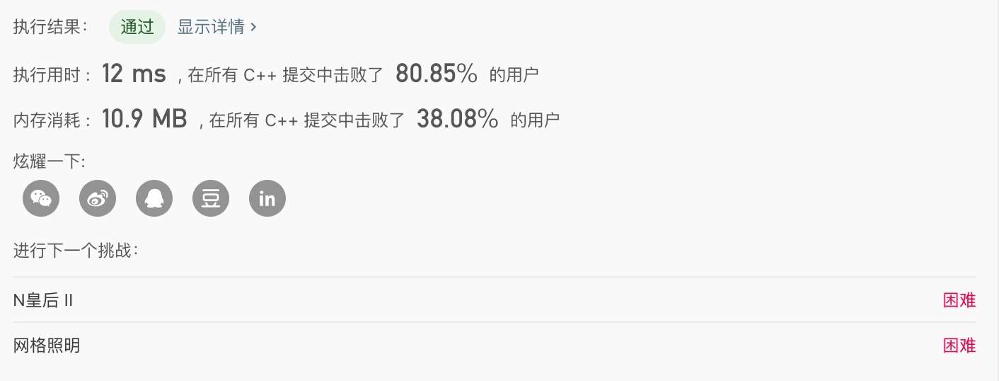
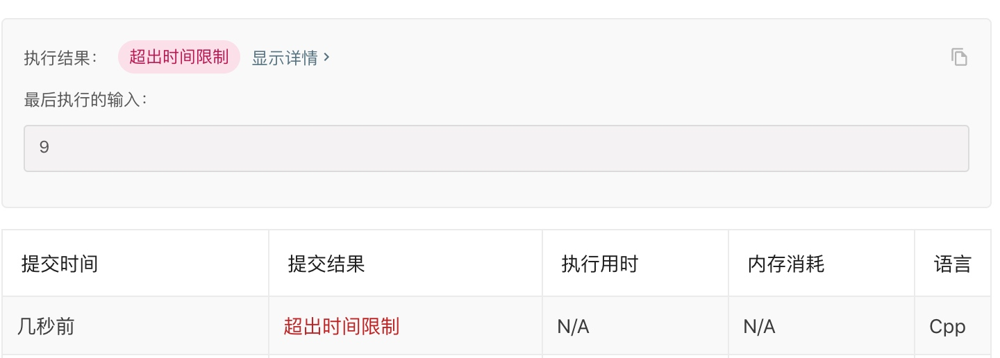

n皇后问题是经典的回溯解题的案例，回溯一般用在有多个解的算法中，回溯的核心是穷举，一般通过必要的减枝提高效率(减少重复计算等)，得到一个解后，把当前解进行保存，然后将当前解标记为未解决，继续尝试下一个可能满足条件的解，即回溯
穷举解有利于理解问题的本质，回溯解提高解题效率
题目参考：https://leetcode-cn.com/problems/n-queens/

可以看到n皇后是leetcode上一道难度为困难的题
基本事实
- 皇后的个数和行数相等
- 每行必定有且只有一个皇后, 如果用row1, row2表示两个皇后所处的行，必定存在row1 != row2
两个皇后必定存在不在同一条斜线上, [row1, col1], [row2, col2]，
必定存在 | row1 - row2 | != | col1 -col2 |
或者 左右对角线分开判断
左对角线
row1 - col1 == row2 - col2
右对角线
row1 + col1 = row2 + col2两个皇后必定不在同一列上，必定存在col1 != col2
要找到所有皇后的集合，必定在找到满足的一个皇后后，不能停，需要继续查找下一个皇后
满足以上条件，即可求得n皇后的解
回溯解
#include <iostream>
#include <vector>
#include <cmath>
using namespace std;
#define QUEUE_NUM 8
int usedRowAndCol[QUEUE_NUM + 1] = {0}; // 已经使用的行和列, 0表示未使用，有值表示列值, 键是行 值是列
vector< vector<string> > result; // 存储n皇后所有可能结果
void findAQueue(int);
void recordAnswer();
void printAnswer();
void findAQueue(int row)
{
// row这行肯定是可以用的，主要是获取可用的列，列也有8列，所以进行穷举, 判断row行的col列是否可用
for (int col = 1; col <= QUEUE_NUM; col ++) {
// 检查列是否可用 1. 两个皇后必定不在同一列上，必定存在col1 != col2
// 2. 两个皇后必定存在不在同一条斜线上, [row1, col1], [row2, col2]，必定存在 | row1 - col1 | != | row2 -col2 |
// 判断当前行的，当前col列在不在对角线上已经占用了
bool canPlaceInThisCol = true;
for (int currentRow = 1; currentRow < row; currentRow ++) {
// currentRow行的col列用过了
if (usedRowAndCol[currentRow] == col) {
canPlaceInThisCol = false;
break;
}
// 左对角线有用过了
if (currentRow - usedRowAndCol[currentRow] == row - col) {
canPlaceInThisCol = false;
break;
}
// 右对角线是否用过了
if (currentRow + usedRowAndCol[currentRow] == row + col) {
canPlaceInThisCol = false;
break;
}
}
if (canPlaceInThisCol) {
// 列可用，进行记录
usedRowAndCol[row] = col;
// 找下一行的那列可以使用
if (row < QUEUE_NUM) {
findAQueue(row + 1);
}
if (row == QUEUE_NUM) { // 如果当前是最后一行了，就不用再继续找了，记录答案
recordAnswer();
}
}
}
}
void recordAnswer()
{
vector<string> oneResult;
for (int i = 1; i <= QUEUE_NUM; i ++) {
string row(QUEUE_NUM, '.');
row[usedRowAndCol[i] - 1] = 'Q';
oneResult.push_back(row);
}
result.push_back(oneResult);
}
void printAnswer()
{
for (int i = 0; i < result.size(); i ++) {
for (int j = 0; j < result[i].size(); j ++) {
cout << result[i][j] << endl;
}
cout << "---------sep----------" << endl;
}
}
int main(int argc, char *argv[])
{
findAQueue(1);
cout << result.size() << endl;
}
这里为了提高代码的可读性，使用了分别排除左对角线和右对角线的方法排除皇后，也可以直接使用绝对值方法
把代码稍作修改填到leetcode上即可

暴力解
排列出所有的组合，挨个判断每个组合是否满足n皇后的条件
#include <iostream>
#include <vector>
using namespace std;
#define QUEUE_NUM 4
int QUEUE_LIST[QUEUE_NUM];
vector< vector<string> > result; // 存储n皇后所有可能结果
bool is_ok(int row)
{
if (row == QUEUE_NUM - 1) {
return true;
}
int first = QUEUE_LIST[row];
bool ok = true;
for (int currentRow = row + 1; currentRow < QUEUE_NUM; currentRow ++) {
// 不能在同一列
if (QUEUE_LIST[currentRow] == first) {
ok = false;
break;
}
// 左对角线有用过了
if (currentRow - QUEUE_LIST[currentRow] == row - first) {
ok = false;
break;
}
// 右对角线是否用过了
if (currentRow + QUEUE_LIST[currentRow] == row + first) {
ok = false;
break;
}
}
// 检查 row + 1行和 row + 2 -> QUEUE_NUM行是否满足条件
if (ok) {
ok = is_ok(row + 1);
}
return ok;
}
void recordAnswer()
{
vector<string> oneResult;
for (int i = 0; i < QUEUE_NUM; i ++) {
string row(QUEUE_NUM, '.');
row[QUEUE_LIST[i]] = 'Q';
oneResult.push_back(row);
}
result.push_back(oneResult);
}
void printAnswer()
{
for (int i = 0; i < result.size(); i ++) {
for (int j = 0; j < result[i].size(); j ++) {
cout << result[i][j] << endl;
}
cout << "---------sep----------" << endl;
}
}
void queue(int row)
{
for (int i = 0; i < QUEUE_NUM; i ++) {
QUEUE_LIST[row] = i;
if (row == QUEUE_NUM - 1) {
// 找到一个组合，进行判断是否满足8皇后定义
if (is_ok(0)) {
// 进行记录
recordAnswer();
}
continue;
}
queue(row + 1);
}
}
int main(int argc, char *argv[]) {
queue(0);
printAnswer();
}
由于穷举解多出了很多无效的组合，lc上直接超时了...，可以在本地计算机上自行验证

一些注意的点
暴力解是先求出所有的皇后的组合，然后逐个判断皇后是否满足位置条件
回溯解就是在求皇后组合是否满足条件时，提前进行判断，提前剪掉了这部分皇后的组合
回溯法的col, row值从1开始是为了避免usedRowAndCol默认值的0和col, row索引的0冲突，导致的判断异常